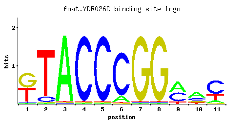
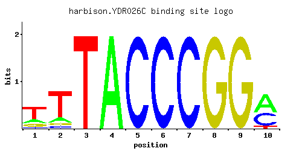
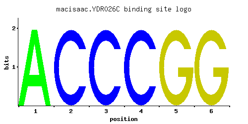

01 / RECOMMENDED MATRIX
Best-performing DNA-binding model.
Fisher’s P-value2.92e-23
Information content17.16
Max PWM score13.52
Recommended cutoff11.39
View and copy the recommended matrices ↘
Position frequency matrix (PFM)
A | 0.091 0.001 0.001 1.000 0.001 0.001 0.064 0.001 0.027 0.384
C | 0.001 0.001 0.055 0.001 1.000 1.000 0.936 0.001 0.001 0.415
G | 0.144 0.022 0.001 0.001 0.001 0.001 0.001 1.000 0.973 0.058
T | 0.765 0.978 0.945 0.001 0.001 0.001 0.001 0.001 0.001 0.143
Position count matrix (PCM)
A | 9 0 0 100 0 0 6 0 2 38
C | 0 0 5 0 100 100 93 0 0 41
G | 14 2 0 0 0 0 0 100 97 5
T | 76 97 94 0 0 0 0 0 0 14
Position weight matrix (PWM)
A | -1.26 -5.77 -5.77 1.14 -5.77 -5.77 -1.61 -5.77 -2.47 0.18
C | -5.19 -5.19 -1.19 -5.19 1.71 1.71 1.65 -5.19 -5.19 0.84
G | -0.22 -2.10 -5.19 -5.19 -5.19 -5.19 -5.19 1.71 1.69 -1.13
T | 0.87 1.12 1.08 -5.77 -5.77 -5.77 -5.77 -5.77 -5.77 -0.81
02 / COMPARATIVE BENCHMARKS
Alternative candidate matrices 3
Historical matrix candidates from the original ScerTF database. Expand a source to inspect its original logo, scores, and matrix values.
YDR026CFoat et. al.P = 3.28e-21View matrix ↘

Fisher’s P-value3.28e-21
Information content15.48
Max PWM score13.98
Recommended cutoff10.44
Position frequency matrix (PFM)
A | 0.25 0.11 0.10 0.01 0.01 0.01 0.01 0.01 0.01 0.88 0.46
C | 0.02 0.14 0.01 0.97 0.97 0.01 0.01 0.01 0.01 0.01 0.50
G | 0.61 0.23 0.42 0.01 0.01 0.86 0.97 0.97 0.01 0.10 0.03
T | 0.12 0.52 0.48 0.01 0.01 0.12 0.01 0.01 0.97 0.01 0.01
Position count matrix (PCM)
A | 25 11 10 1 1 1 1 1 1 88 46
C | 2 14 1 97 97 1 1 1 1 1 50
G | 61 23 42 1 1 86 97 97 1 10 3
T | 12 52 48 1 1 12 1 1 97 1 1
Position weight matrix (PWM)
A | -0.25 -1.07 -1.16 -3.47 -3.47 -3.47 -3.47 -3.47 -3.47 1.01 0.36
C | -2.20 -0.25 -2.89 1.68 1.68 -2.89 -2.89 -2.89 -2.89 -2.89 1.02
G | 1.22 0.25 0.85 -2.89 -2.89 1.56 1.68 1.68 -2.89 -0.59 -1.79
T | -0.98 0.49 0.41 -3.47 -3.47 -0.98 -3.47 -3.47 1.11 -3.47 -3.47
YDR026CHarbison et. al.P = 7.77e-22View matrix ↘

Fisher’s P-value7.77e-22
Information content16.9
Max PWM score13.02
Recommended cutoff11.81
Position frequency matrix (PFM)
A | 0.176 0.130 0.001 0.999 0.001 0.001 0.001 0.001 0.001 0.538
C | 0.070 0.070 0.001 0.001 1.000 1.000 1.000 0.001 0.001 0.385
G | 0.163 0.070 0.001 0.001 0.001 0.001 0.001 1.000 1.000 0.001
T | 0.591 0.729 0.999 0.001 0.001 0.001 0.001 0.001 0.001 0.077
Position count matrix (PCM)
A | 17 13 0 99 0 0 0 0 0 53
C | 7 7 0 0 100 100 100 0 0 38
G | 16 7 0 0 0 0 0 100 100 0
T | 59 72 99 0 0 0 0 0 0 7
Position weight matrix (PWM)
A | -0.60 -0.90 -5.77 1.14 -5.77 -5.77 -5.77 -5.77 -5.77 0.52
C | -0.94 -0.94 -5.19 -5.19 1.71 1.71 1.71 -5.19 -5.19 0.76
G | -0.10 -0.94 -5.19 -5.19 -5.19 -5.19 -5.19 1.71 1.71 -5.19
T | 0.61 0.82 1.14 -5.77 -5.77 -5.77 -5.77 -5.77 -5.77 -1.42
YDR026CMacisaac et. alP = 1.67e-13View matrix ↘

Fisher’s P-value1.67e-13
Information content13.8
Max PWM score9.69
Recommended cutoff9.69
Position frequency matrix (PFM)
A | 0.997 0.001 0.001 0.001 0.001 0.001
C | 0.001 0.997 0.997 0.997 0.001 0.001
G | 0.001 0.001 0.001 0.001 0.997 0.997
T | 0.001 0.001 0.001 0.001 0.001 0.001
Position count matrix (PCM)
A | 99 0 0 0 0 0
C | 0 99 99 99 0 0
G | 0 0 0 0 99 99
T | 0 0 0 0 0 0
Position weight matrix (PWM)
A | 1.14 -5.77 -5.77 -5.77 -5.77 -5.77
C | -5.19 1.71 1.71 1.71 -5.19 -5.19
G | -5.19 -5.19 -5.19 -5.19 1.71 1.71
T | -5.77 -5.77 -5.77 -5.77 -5.77 -5.77
03 / EXPERIMENTAL CONTEXT
Gene-level annotations and interactions.
Genes bound in ChIP-chip experiments 1 genes
No Data
Genes affected by TF deletion 23 genes
YNL051W, YPL240C, YPL016W, YNL143C, YJL209W, YDR281C, YJR148W, YKR023W, YDR102C, YLR345W, YNL039W, YBR296C, YNR001C, YOL002C, YOL119C, YOL095C, YOR027W, YCR031C, YGL255W, YMR034C, YPL075W, YPR044C, YOL101C
Predicted TF–TF partners 8 genes
CBF1, GIS1, MBP1, MSN2, RGM1, RPN4, SWI6, USV1
Explore 8 original interaction plots →